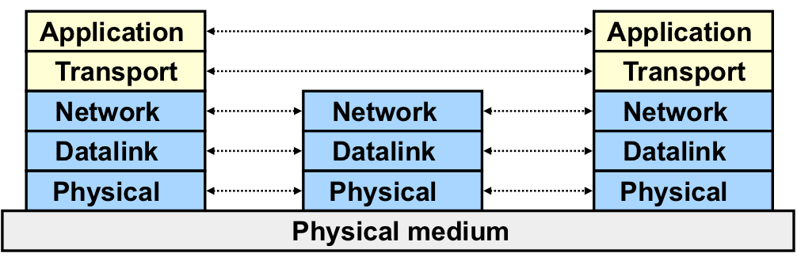

Layered Network Architecture
layering
definition
- a technique to organize a networked system into a succession of logically distinct entities, such that the service provided by one entity is solely based on the service provided by the previous(lower entity).

why
Networks are complex
- Hardware
- Hosts
- Routers
- Links of various media
- Software
Effect
- explicit structure allows identification of the relationship among complex system's pieces
- modularization eases maintenance, updating of system. Change of implementation of layer's service transparent to rest of system.
Example
application
- provide services to users
- protocol
- Send messages to peer
- for example, helo, mail from, rcpt to are messages between two SMTP peers
transport
- protocol
- Add control info to form "datagram"
- send datagram to peer
- wait for peer to ack receipt;if no ack, retransmit
concepts
- ISO
-
International Standard Organization
- OSI
-
Open System Interconnection
- Service
-
says what a layer does
- Interface
-
says how to access the service
- Protocol
-
says how the service is inplemented
- A set of rules and formats that govern the communications between two peers.
Key design issue: how do you divide functionalities among the layers?
The End-to-End Arguments
The function in question can completely and correctly be implemented only with the knowledge and help of the application standing at the endpoints of the communication systems. Therefore, providing that questioned function as a feature of the communications systems iteself is not possible. —-J.Saltzer, D.Reed, and D.Clark, 1984
- The application knows the requirements best, place functionalities as high in the layer as possible
- Think twice before implementing a functionality at a lower layer, even when you believe it will be useful to an application